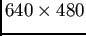

Extracción y descripción de caracterÃsticas
En la etapa de extracción y descripción de caracterÃsticas, se detectan puntos claves o de interés en la imagen que se está analizando con el método que se describió en la Sec. 2.3. Dicha detección se realiza en la subimagen determinada por BR. Esta etapa involucra básicamente dos pasos:
- Detectar los puntos claves en la imagen.
- Extraer un vector de caracterÃsticas (64 elementos) para cada punto detectado en la imagen.
Para llevar a cabo dichos pasos, se ha utilizado un algoritmo descripto en (5) para el cual se especifican los siguientes parámetros:
- nOctaves: identifica el número de octavas que se utilizan en la búsqueda de puntos claves. Se estableció en el valor 4 en el que se obtuvieron resultados satisfactorios (5).
- nOctaveLayers: es el número de filtros o capas utilizado dentro de cada octava. Se estableció en el valor 3 ya que resultó adecuado y es recomendado en (5).
- hessianThreshold: es un valor de umbral que se utiliza para eliminar máximos locales detectados con el determinante del hessiano descripto en la Sec. 2.3. Aquellas caracterÃsticas cuyo determinante del hessiano superan dicho umbral son extraÃdas. Los valores para este parámetro, dependen del promedio local del contraste, la nitidez y los detalles de la imagen. Estos valores serán tratados en el capÃtulo 4.
Un ejemplo de los efectos de este parámetro sobre una misma imagen puede ser observado en las Fig. 3.5a y 3.5b, donde la lÃnea verde representa la orientación para el punto clave detectado (marcado en color azul) y la escala viene representada por el cÃrculo rojo centrado en cada punto clave. En la Fig. 3.5a se fijó el umbral en 800 (más puntos detectados), mientras que en la Fig. 3.5b se utilizó el valor 3000 con lo cual se puede ver una disminución en la cantidad de los puntos detectados.
Figura:
Extracción de caracterÃsticas para la imagen patrón con dos va-lores de umbral aplicado sobre el Hessiano.
|
[]

[]
|
christian
2014-01-31